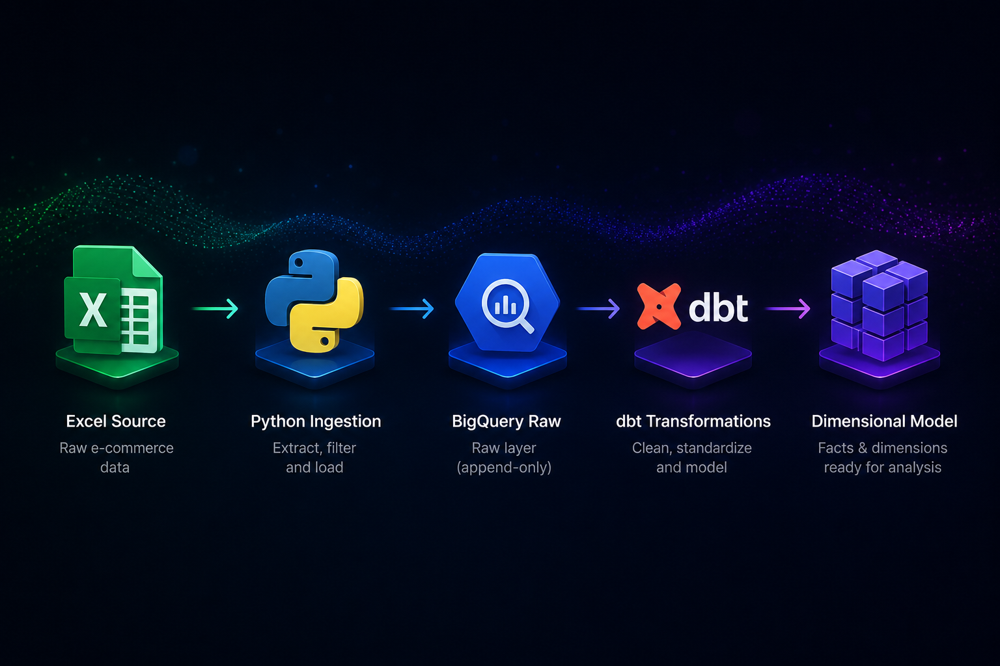

E-commerce Data Pipeline
An end-to-end batch data pipeline demonstrating incremental loading, dimensional modeling,
and workflow orchestration. Built as a portfolio project to deepen data engineering skills
using dbt and Apache Airflow—tools I hadn't used before but knew would strengthen
my existing SQL and BigQuery foundation.

The Motivation
After building a production SEO pipeline for Herd, I wanted to continue developing data engineering skills. I'd initially looked at the Google Cloud Professional Data Engineer certification, but after reviewing the curriculum I realized I didn't need more course completion badges—I needed more hands-on project work.
The SEO pipeline had given me strong foundations in SQL and BigQuery, but I hadn't worked with transformation frameworks like dbt or orchestration tools like Airflow. Rather than follow a pre-built tutorial, I set out to build a realistic pipeline from scratch: sourcing my own dataset, making my own architectural decisions, and working through the problems that only surface when you're building something real.
What I Built
A production-style batch pipeline processing e-commerce transaction data through a dimensional warehouse. The pipeline loads data incrementally (one date at a time), deduplicates at the staging layer, transforms into a star schema, runs 22 automated data quality tests, and orchestrates everything through Airflow.
- Incremental ingestion — Python script accepts a date parameter and loads only that day's transactions to BigQuery, mirroring real-world batch patterns
- Deduplication logic — Source data contained 377 duplicate rows; staging layer uses ROW_NUMBER() window functions to deduplicate by business key, handling both source duplicates and accidental pipeline re-runs
- Dimensional model — Staging layer cleans and flags quality issues; marts layer builds a star schema (2 dimensions, 2 fact tables) optimized for analytical queries
- Automated testing — 22 dbt tests validate primary keys, foreign keys, and required fields across all layers
- Workflow orchestration — Airflow DAG coordinates ingestion → dbt transformation dependencies, supports manual triggers and historical backfilling
Technical Highlights
- Airflow backfilling — Used manual backfill commands to load historical dates sequentially; max_active_runs=1 enforces one-date-at-a-time processing
- Quality flags over hard filters — Staging layer flags issues (negative quantities, missing customer IDs) rather than dropping rows; downstream consumers decide how to handle them
- Composite quality flag — Single is_valid_transaction field checks all quality conditions at once, making it easy for analysts to filter to clean data
- dbt model organization — Three-layer structure (staging/dimensions/facts) with tests co-located in schema.yml files per folder
- Raw layer as audit trail — Everything received gets stored; deduplication happens in staging, preserving flexibility for reprocessing with different logic
- Full-refresh transformations — Simpler to implement and validate as a starting point; incremental models would improve performance but add complexity around state management
Key Technologies
Python, BigQuery, dbt, Apache Airflow, SQL, Git.
Skills Demonstrated
Pipeline architecture, incremental data loading, dimensional modeling, SQL transformation logic, data quality testing, workflow orchestration, independent problem-solving, technical decision-making.